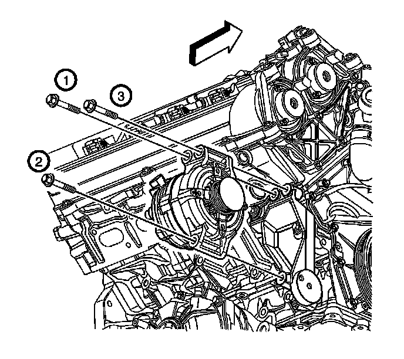
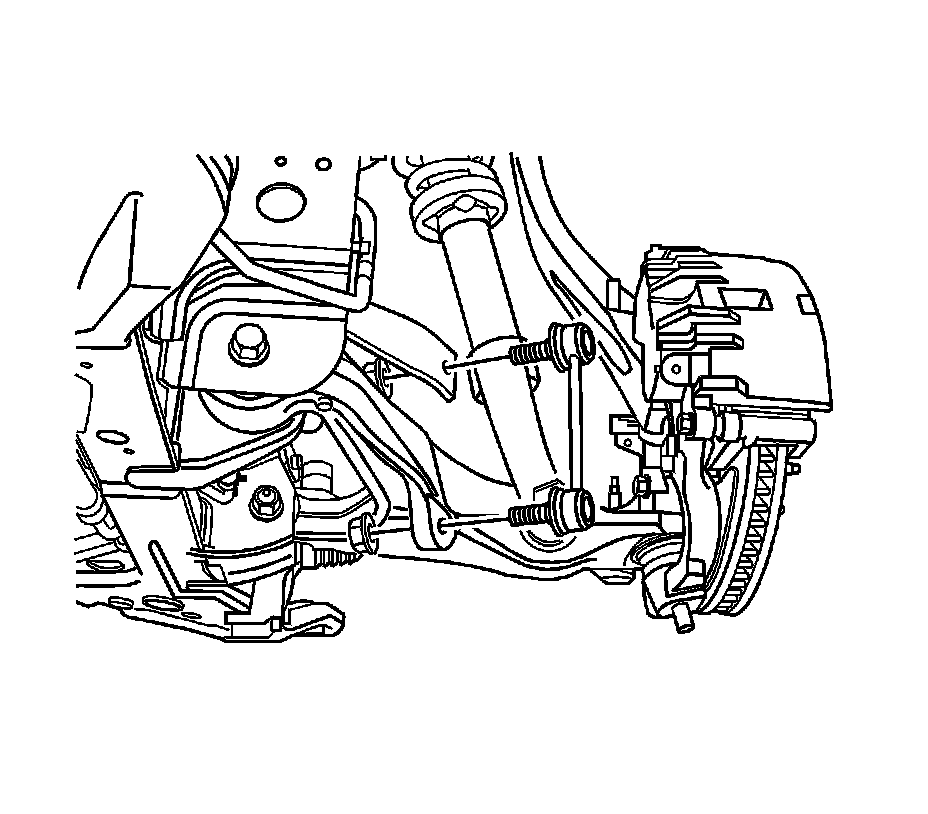
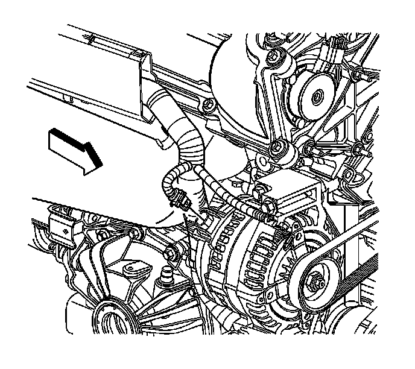

Generator Replacement
Generator Replacement (LH2 (AWD))
Removal Procedure

1. Disconnect the battery negative cable. Refer to Battery Negative Cable Disconnection and Connection (LHD) (Service and Repair)Battery Negative Cable Disconnection and Connection (RHD) (Service and Repair) .
2. Remove the generator drive belt. Refer to Generator Drive Belt Replacement (Generator Drive Belt Replacement) .
3. Remove the upper generator mounting bolts (1, 3).
4. Raise and support the vehicle. Refer to Lifting and Jacking the Vehicle (Service and Repair) .
5. Remove the front air deflector. Refer to Front Air Deflector Replacement (Service and Repair) .

6. Remove the front wheels. Refer to Tire and Wheel Removal and Installation (Service and Repair) .
7. Remove the right side wheelhouse liner. Refer to Wheelhouse Panel Replacement - Right Side (Service and Repair) .
8. Remove the right and left side stabilizer shaft links at the lower control arm. Refer to Stabilizer Shaft Link Replacement (Front Suspension) .
9. Rotate the stabilizer shaft downward to gain access to the generator and to create a removal envelop for generator removal.
10. Perform the remainder of the removal process through the wheelhouse opening.
11. Cut the tie strap securing the wiring harness to the generator.

12. Remove the lower generator mounting bolt.
13. Lift the generator off of the mounting bracket in order to gain access to the connector and the generator output BAT terminal nut.
14. Disconnect the wire harness electrical connector from the generator.
15. Reposition the protective boot from the generator output battery terminal for access.
16. Remove the generator output battery terminal nut and disconnect the battery positive lead from the generator.
17. Remove the generator from the vehicle.
Installation Procedure
1. Position the generator near the installed position.
Notice: Refer to Fastener Notice (Fastener Notice) .
2. Connect the battery positive lead to the generator and install the generator output battery terminal nut.
Tighten the nut to 10 N.m (89 lb in).
3. Press the protective boot on to the generator output BAT terminal.
4. Connect the wiring harness connector to the generator.
5. Position the generator to the generator bracket on the engine.
6. Install the lower generator mounting bolt, but do not tighten at this time.
7. Lower the vehicle.
8. Install the upper generator mounting bolts.
Tighten the bolts in the sequence shown to 50 N.m (37 lb ft).
9. Raise and support the vehicle. Refer to Lifting and Jacking the Vehicle (Service and Repair) .
10. Install a new tie strap to secure the wiring harness to the generator.
11. Install the right and left side stabilizer shaft links to the lower control arm. Refer to Stabilizer Shaft Link Replacement (Front Suspension) .
12. Install the right side wheelhouse liner. Refer to Wheelhouse Panel Replacement - Right Side (Service and Repair) .
13. Install the front wheels. Refer to Tire and Wheel Removal and Installation (Service and Repair) .
14. Install the front air deflector. Refer to Front Air Deflector Replacement (Service and Repair) .
15. Lower the vehicle.
16. Install the generator drive belt. Refer to Generator Drive Belt Replacement (Generator Drive Belt Replacement) .
17. Connect the battery negative cable. Refer to Battery Negative Cable Disconnection and Connection (LHD) (Service and Repair)Battery Negative Cable Disconnection and Connection (RHD) (Service and Repair) .